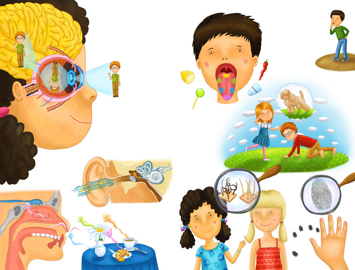
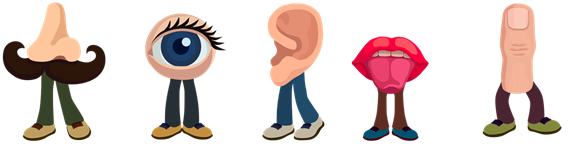
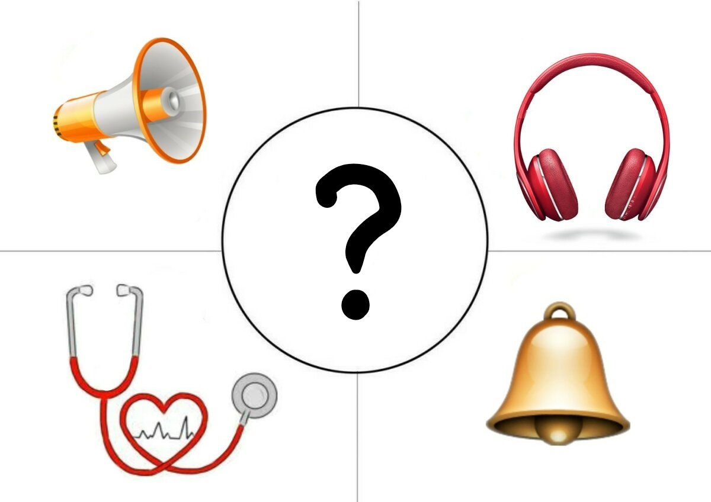
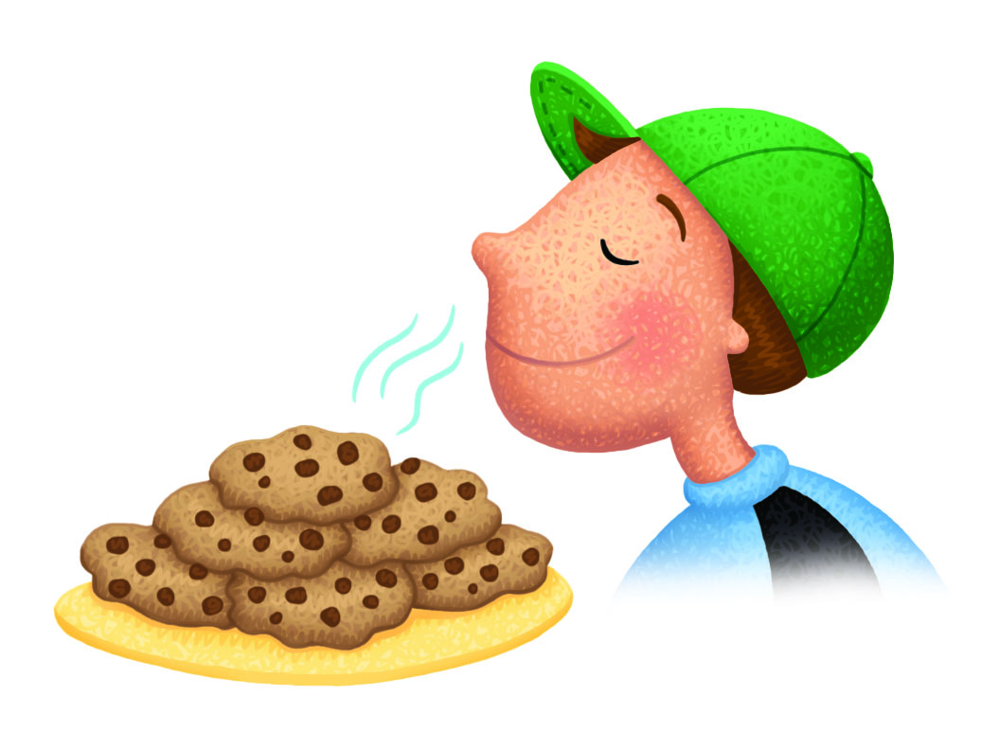
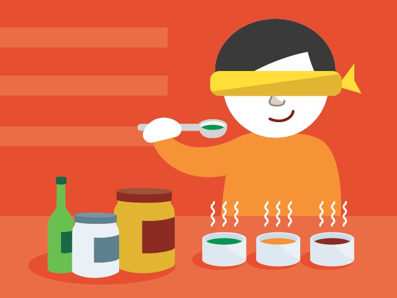
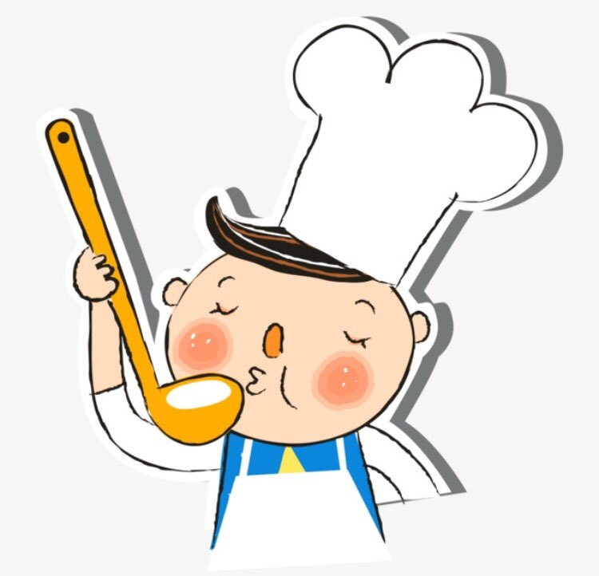
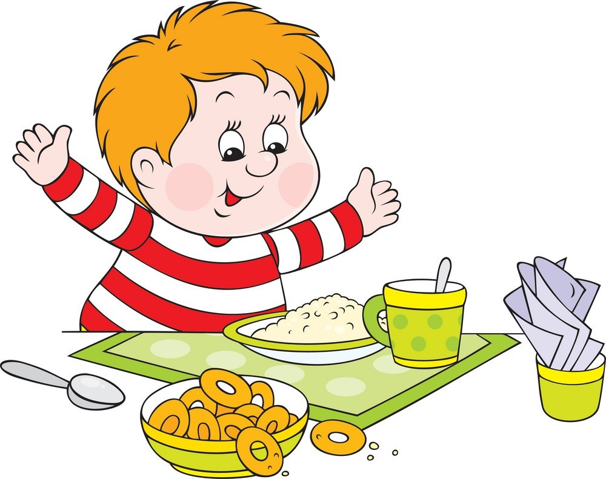
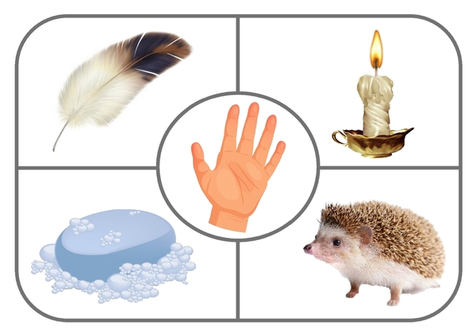
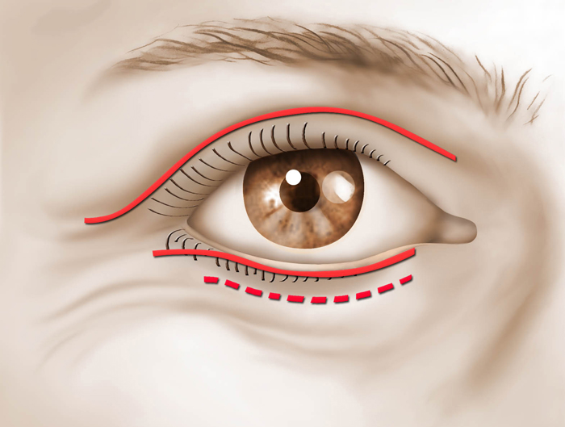

1. Что помогает человеку получать больше всего сведений об окружающем мире?

2. Органы чувств это:

3. Что является органом слуха?

4. Как называется способность человека чувствовать запахи?

5. Что из перечисленного является органом вкуса?

6. Багодаря чему человек различает вкус пищи?

7. Почему человек не чувствует вкус горячей пищи?

8. Что является органом осязания?
